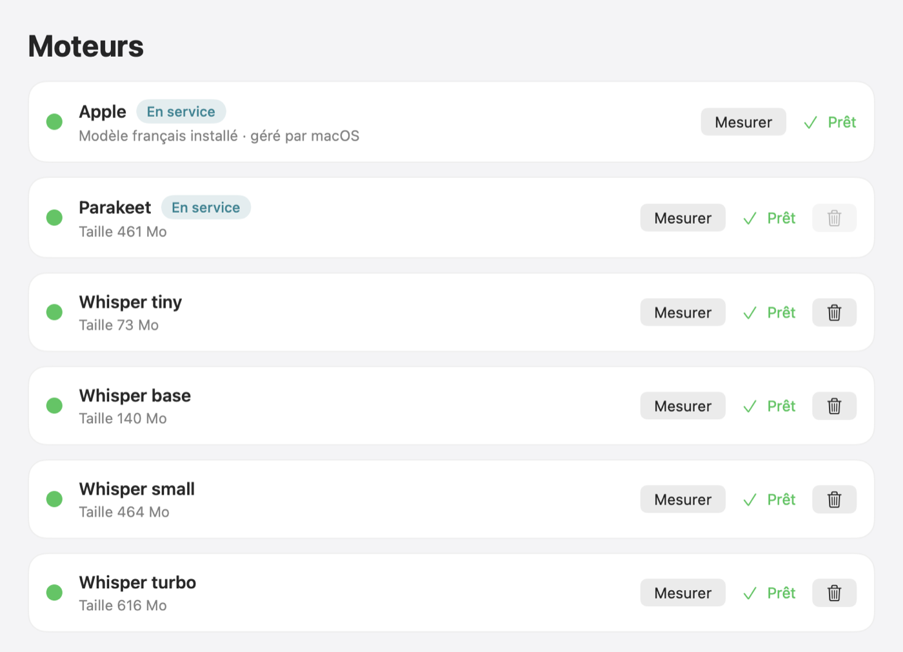
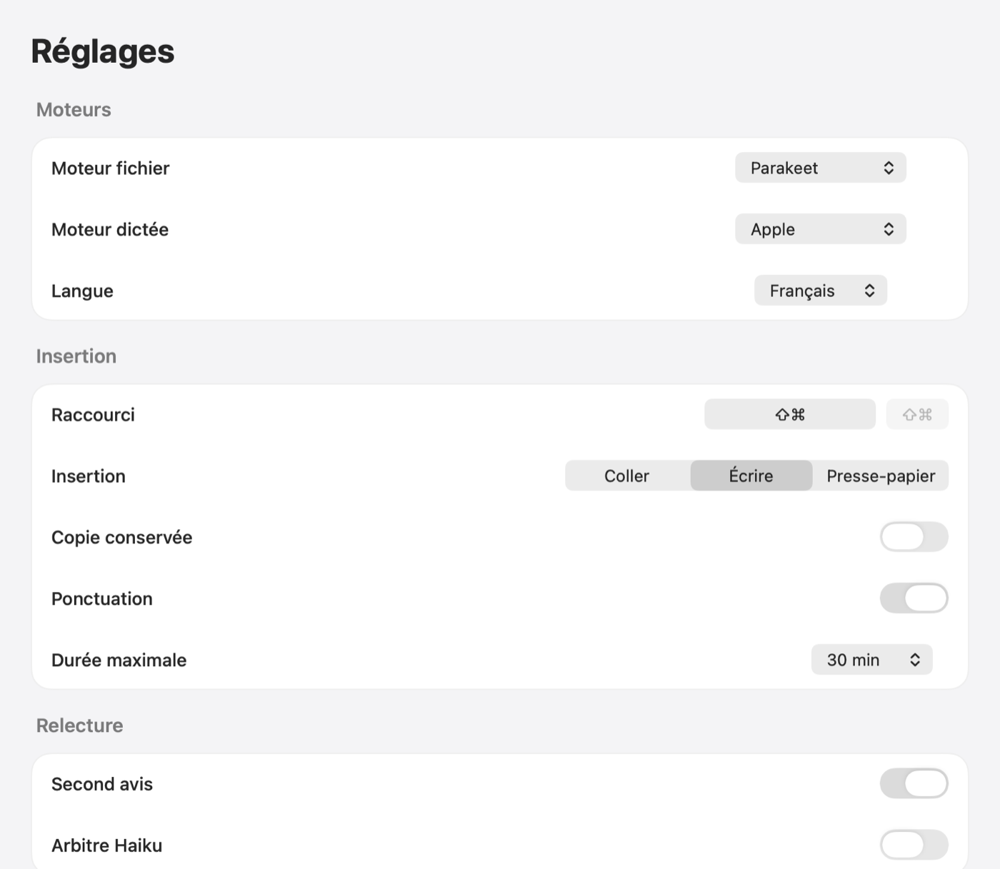

Maintenez, parlez, relâchez.
Le texte s'écrit au curseur, dans l'app au premier plan. Raccourci par défaut : ⇧⌘ (réglable).
Cinq langues : français, anglais, espagnol, allemand, italien. Dans un champ de mot de passe, Tadis n'écrit rien.
Au relâchement, le texte est déjà là.
Déposez un fichier, récupérez le texte.
Un vocal, un mémo, une réunion, une vidéo : glissez-le dans la fenêtre. Les passages douteux sont marqués en orange, à réécouter.
Copier d'un clic, ou exporter en TXTSRTVTTMarkdown
Quel moteur vous comprend ?
Une seule voix enregistrée, donnée à tous les moteurs prêts, côte à côte.
Vos derniers textes
Gardés sur le Mac, effaçables d'un clic avec « Tout effacer ».
Les doutes sont relus
Chaque passage douteux est relu seul par un autre moteur du Mac.
Trois familles, toutes sur le Mac.
- Apple : rien à télécharger, géré par macOS. Il dicte par défaut.
- Parakeet (NVIDIA) : à télécharger une fois. Il transcrit les fichiers par défaut.
- Whisper (OpenAI) : à télécharger une fois, en quatre tailles.
Les téléchargements vont de 75 à 630 Mo selon le modèle. Ensuite, tout tourne sans Internet.

Votre voix reste sur le Mac.
- Rien n'est envoyé : pas de compte, pas de serveur.
- Le micro n'est pas enregistré. Seul le dernier essai de Comparer reste, sept jours.
- Un champ de mot de passe est refusé : rien n'y est écrit.
- Arbitre par Claude : éteint par défaut. Allumé, il envoie du texte, jamais l'audio.

Vous utilisez la dictée de macOS ?
Apple reste le moteur de dictée par défaut de Tadis.
Parakeet et Whisper, les fichiers audio et vidéo, Comparer, l'historique.
Mac à puce Apple et macOS 26 seulement. Les autres moteurs sont à télécharger.
Autre voie : Tadis.zip, à décompresser, puis suivre le fichier LISEZ-MOI.txt. Version 0.5.0, 14/11/2026.